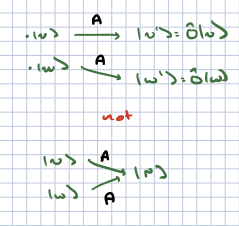

Linear operators#
In classical mechanics we saw that the states of the system were described as points on phase space. Observables of the system were functions on phase space, that could be described as generators of infinitesimal transformations.
In quantum mechanics, the space of ppossible states are described as vectors in a complex vector space (recall the discussion of photon polarization). Observables and generators of transformations are described as operators which map vectors to other vectors. More specifically, the correspond to linear operators which respect the linear structure of the vector space (addition and scalkar multiplication).
Definitions#
Let \(V_1,V_2\) be two vector spaces over \(\CF\). A linear map \(F\) is a map
such that
Note that we can easily prove with this that for the zero vector \(\ket{0}_1 \in V_1\), \(f(\ket{0}_1) = \ket{0}_2 \in V_2\) where \(\ket{0}_2\) is the zero vector.
For vector spaces \(V_1, V_2\), over the complex numbers \(\CC\), an antilinear map \(f\) is a map \(f: V_1 \to V_2\) such that
where \(a^*, b^*\) are the complex conjugates of \(a,b\) respectively. This is important for defining adjoint vectors and normas of vectors.
Let \(V\) be a vector space over \(\CF\). A linear operator f is a linear map \(F: V \to V\).
For \(\CF = \CC\), an antilinear operator g is an antilinear map \(g: V \to V\).
Antilinear operators include the operator that implements time reversal, which is important in various condensed matter physics and particle physics contexts.
Abstractly we usually denote operators by capital letters \(A\) and the action of operators as \(A: \ket{V} \to A\ket{v}\).
Examples#
The identity operator \({\bf 1}\ket{v} = \ket{v} \forall \ket{v}\).
The zero operator \(\varnothing: \ket{V} \to \ket{0}\).
More generally, scalar multiplication by any scalar in \(\CF\) is a linear operator.
For \(C = \CC^n\), \(n \times n\) matrices acting on column vectors by the usual rules of matrix multiplication are all linear operators. In fact one can represent any finite-dimensional vector space of dimension \(n\) by \(\CC^n\), and every operator as a matrix acting on \(\CC^n\).
A more interesting example: consider the (infinite-dimensional) space of all polynomials. We can represent these as
The following operators
shifts or multiplication by \(x\)
derivatives with repect to \(x\)
are linear operators on \(V\).
Relatedly, consider the vector space of square-integrable complex functions. You can convince yourself that multiplication by \(x\) and differentiation are linear operators. There are some subtleties here; it can be that these take the function out of the Hilbert space (eg multiplication can, if \(f\) falls off as \(1/|x|\) at infinity).
Operator algebras#
In general we can combine operators to form new linear operator in various ways: technically, they define an *algebra:
Operators can be added: for operators \(A_1,A_2\) acting on a vector space \(V\), we can define
for any \(\ket{v} \in V\), and \(a,b \in \CF\).
It is straightforward to see that \((a A_1 + b A_2)\) is thus a linear operator, Note that \(A + \varnothing = A\) under this rule, \(A_1 + A_2 = A_2 + A_1\), and if \(a = 0\), \(a A = \varnothing\).
We can also multiply operators. For any two linear operators \(A_1,A_2\), we define
With a little work you can show that \(A_1 A_2\) is a linear operator. Note that if \(\bf{1}\) is the identity operator, \(\bf{1} A = A \bf{1} = A\). Multiplication is associative: that is, if \(A_3\) is also a linear operator, \(((A_1 A_2) A_3) = (A_1(A_2 A_3))\). However, it does not have to be commutative. For example, for \(V = \CC^n\) with operators equal to \(n\times n\) matrices, operator multiplication is just matrix multiplication which is certainly not commutative. Consider \(V = \CC^2\), and operators
then operator multiplication is simply matrix multiplication which we know is not commutative. In part
In general we measure the lack of commutativity with the commutator:
Note that the commutator is itself a linear operator.
Kernel, range, and inverse#
Kernel of an operator and injective maps#
Definition: Consider a vector space \(V\) and a linear operator \(A\) acting on it. The *kernel\( of \)A$ is defined as
As an example, consider \(V = \CC^4\), and the operator
You can show that
Note that this is a vector subspace of \(\CC^4\). This is no accident, as we can prove:
Theorem. For any vector space \(V\) and linear operator \(A\) acting on it, \(\text{Ker}(A)\) is a vector subspace of \(V\). (The proof in your problem set for the week).
Definition. A linear operator \(A\) acting on a vector space \(V\) is injectove or one-to-one if

Finally, we note that these concepts can be extended naturally to maps between different vector spaces, though we will not use them in that context here.
Theorem. A linear operator \(A\) is injective if and only if \(\text{Ker}(A) = 0\).
Range and surjective maps#
Definition. Consider a linear operator \(A\) actig on a vector space \(V\). The range of \(A\) can be fined as
As an example consider \(V = \CC^4\),
Then
Theorem: for any vector space \(V\) and linear operator \(A\) acting on that space, \(\text{Range}(A)\) is a vector subspace of \(V\). I leave the proof as an exercise.
Definition For a vector space \(V\), a linear operator \(A\) acting on it is surjective or onto if \(\text{range}(A) = V\).
Definition For a linear operator \(A\) acting on a vector space \(V\), the rangk of \(A\) is \(\text{Rk}(A) = \text{dim}(\text{RAnge}(A))\).
Rank-nullity theorem: For a linear operator \(A\) acting on a vector space \(V\),
The proof can be found in Zweibach’s book [Zwiebach, 2022], from which much of the material in this section is taken.
As an example, consider \(V = \CC^4\),
Then
This two-dimensional vector space has as a basis
Meanwhile
This space has as a basis
It is also two-dimensional, so the rank of \(A\) is 2.
One can show that \(\ket{v_k}\) are all linearly independent. The rank of \(A\) and the dimension of th ekernel are both \(2\), and \(2 + 2 = 4\) last time I checked, so the rank-nullity theorem holds.
Inverses#
For all the below we will consider a veector space \(V\) and a linear operator \(A\) acting on \(V\).
Definition. \(A_L^{-1}\) is the left inverse if \(A_L^{-1} A = \bf{1}\).
Theorem: \(A_L^{-1}\) exists if and only if \(A\) is one-to-one.
Proof: First assume \(A_L^{-1}\) iexists. Now consider \(\ket{v_{1,2}}\) such that
Then
Thus \(\ket{v_1} = \ket{v_2}\) and \(A\) is one-to-one.
On the other hand, assume that \(A\) is one-to-one. Now consider a basis \(\ket{v_i}\) of \(V\). Now any linear combination \(\sum_i c_i\ket{v_i} = 0\) if and only if \(c_i = 0\ \forall\ i\). Since \(A\) is a linear map, consider \(\sum_i c_i A \ket{v_i} = A (\sum_i c_i \ket{v_i})\). Since \(A\) is one-to-one, this can only be zero if \(\sum_i c_i \ket{v_i} = 0\) which as we have already said means that \(c_i = 0\). Therefore, \(A\ket{v_i} \equiv \ket{w_i}\) is also a linearly independent set of vectors, and a basis for \(V\). We can then define
Since \(\ket{w_i}\) is a basis, we simply demand that \(A_L^{-1}\) is a linear operator, and this then determines the action of \(A_L^{-1}\) on all vectors. Finally, we can see
for any \(c_i\), so \(A_L^{-1} A = \bf{1}\).
Comment. Assume \(A\) has a left inverse. Then we can solve the equation
for \(\ket{v}\) given \(\ket{w}\) by acting on both sides of the equation by \(A_L^{-1}\) to ket \(\ket{v} = A_L^{-1} \ket{w}\). However, we cannot necessarily check that this is a solution: we can act on both sides by \(A\) but then \(A \ket{v} = A A_L^{-1} \ket{w}\) and we have no guarantee that \(A A_L^{-1} = \bf{id}\). This becomes a particular issue for infinite-dimensional vector spaces. Consider the space of all polynomials
Now if we define:
we can see quickly that
Thus \(S_L^{-1} S = \bf{1}\) but \(S S_L^{-1}\) does not act as the identity: it strips off the constant term from the polynomial.
Definition. \(A_R^{-1}\) is a right inverse if
Theorem: \(A_R^{-1}\) exists if and only if \(A\) is onto. We will not prove this here (the proof is complicated).
Again, we can furnish an example for which \(A A_R^{-1} = \bf{1}\) and \(A_R^{-1} A \neq \bf{1}\), by looking at the polynomials. Let
We find
so \(T_R^{-1}T\) fails to be the identity operator because (once again) it strips off the constant term.
Definition. A linear operator \(A\) is invertible if \(A_R^{-1}\), \(A_L^{-1}\) exist.
Theorem. If \(A\) is invertible, \(A_L^{-1} = A_R^{-1} \equiv A^{-1}\).
Proof. \(A_L^{-1} A A_R^{-1} = A_L^{-1} = A_R^{-1}\) by associativity of operator multiplication.
Theorem. \(A\) is invertible if and only if it is one-to-one and onto.
Theorem. Consider \(V\) such that \(dim(V) = d < \infty\). Then \(A\) being invertible, \(A\) being one-to-one, and \(A\) being onto are all equivalent.
Proof. This follows from the rank-nullity theorem. We have shown that \(A\) being invertible means it is one-to-one and onto. If \(A\) is one-to-one, then \(\text{dim}(\text{Ker}(A)) = 0\), so by the rank-nullity theorem \(A\) has rank \(n\); this means \(A\) has all of \(V\) as its image so it is onto. Similarly if \(A\) is onto, the rank-nullity theorem shows that \(\text{dim}(\text{Ker}(A)) = 0\) so \(A\) is one-to-one.
Matrix representations#
I stated before that for \(V = \CC^n\), all linear operators can be represented as matrices. In fact, this is true for any finite-dimensional vector space.
Consider a vector space \(V\) with dimension \(n\). It will have basis I can label \(\ket{k}\), \(k = 1,\ldots,n\). COnsider a linear operator \(A\). Since we can write any state in this basis, we can write
\(A_{km}\) here define \(n^2\) complex numbers, and can be thought of as an \(n\times n\) matrix.
Next, consider a general vector \(\ket{v} = \sum_k v_k \ket{k}\). Then
Since the expansion in a given basis is unique, we have \(v'_{\ell} = A_{\ell k} v_k\).
In other words, given any basis, we can represent a vector as a set of \(n\) complex numbers \(v_k\). Of course we can arrange these numbers as a column vector
The action of the operator on that vector produces a new vector which can also be represented by a column vector
In other words, every finite-dimensional vector space can be represented by \(\CC^n\) (as the space of \(n\)-dimensional column vectors), and every linear operator can be realized as an \(n\times n\) matrix acting on column vectors.
You can show further (on your own time), that in the basis above, given two operators \(A,B\), \((AB)_{k\ell} = A_{km}B_{m\ell}\); that is, operator multiplication is just matrix multiplication.
Changes of basis#
The representation of vectors and operators as column vectors and matrices is basis-dependent. However, if we understand what the change of basis is, we can compute what a given vector and operator looks like in the new basis.
Consider two bases \(\ket{k}, \ket{\tilde{k}}\). We can expand the basis vectors on the second in terms of the first:
where \(U_{\ell k}\) are \(n^2\) complex numbers. Note that \(U\) is an invertible matrix as we can write
This only makes sense if \(U_{nm} V_{mk} = \delta_{nk}\). We can run this in the opposite direction by swapping the tilde’dd and non-tilde’d bases in the above. The result is that \(V\) is a left and right inverse for \(U\), and thus \(V = U^{-1}\) as a matrix.
How do operators look in the new basis? If we write
then making the change of bases \(\ket{\tilde{k}} = U_{\ell k} \ket{\ell}\) on both sides, we find
Note here that the matrix \(U\) maps between bases, and \(A,\tilde{A}\) are defined with respect to different basis.
The choice of basis is (at this stage) arbitrary, and one can ask what aspects of an operator are independent of the choice of basis. There are two particularly important quantities one can form:
Given any basis \(\ket{k}\) of \(V\), and an operator \(A\) represented by the matrix \(A_{k\ell}\), the trace of \(A\):
is independent of the choice of basis. To see this,
Definition. The determinant of a matrix is also basis-independent. I will defer to your undergraduate linear algebra class to recall how to define the determinant of a matrix. The fact that it is basis independent comes from the fact that \(\text{Det}(AB) = \text{Det}(A)\text{Det}(B) = \text{Det}(BA)\). Thus
Eigenvalues and eigenvectors#
Definition. Consider a vector space \(V\) and a linear operator \(A\) acting on it. If there is a vector \(\ket{v}\) and a complex number \(\lambda\) such that
then we call \(\ket{v}\) an eigenvector of \(A\) and \(\lambda\) the associated eigenvalue.
Note that for any eigenvector \(\ket{v}\) and any constant \(c \in \CC\), \(c\ket{v}\) is also an eigenvector with the same eigenvalue.
Definition. Let \(\ket{v_k}\) be \(K \leq \text{dim}(V)\) linearly independent eigenvectors of \(A\) with the same eigenvalue \(\lambda\). Then \(\lambda\) is called a degenerate eigenvalue, and \(\ket{v_k}\) span a degenerate subspace associated with \(A,\lambda\). We can show there is a maximal set of such linearly independent eigenvectors for a fixed eigenvalue. These fprm the basis of a subspace of \(V\) valled the degenerate subspace associated with \(\lambda\). The dimension of this subspace is called the geometric multiplicity of the eigenvalue.
With a little thought you can show that the basis vectors for two degenerate subspaces associated to distinct eigenvalues are a linearly independent set of vectors.
We can rewrite the eigenvalue equation above as
This means that \(\text{Ker}(A - \lambda \bf{1})\) is nontrivial, and therefore \(A - \lambda \bf{1}\) is not an invertibel operator.
It is a basic fact that any operator \(A\) is invertible if and only if \(\text{Det}(A) \neq 0\). The reson is as follows. There is a standard formula in linear algebra for the inverse:
where the cofactor is the determinant of the \((n-1)\times(n-1)\)-dimensional matrix corresponding to \(A\) with the \(m\)th row and the \(n\)th column deleted. This fails to be well defined precisely when the denominator vanishes.
Thus, to find the eigenvalues of a matrix, we can solve the equation \(\text{Det}(A - \lambda \bf{1}) = 0\). For \(V\) with dimension \(n\), this is an \(n\)th order polynomial equation. A simple example is a \(2\times 2\) matrix acting on \(\CC^2\):
This is equal to zero when
Functions of operators#
Lastly, we will need to define the concept of a function of an operator. Thet \(f(x)\) be a complex-valued function of a complex argument. How can we define \(f(A)\)? The clearest way is via a Taylor series. That is, if
then we can define
(We will find other ways to descibr operators once we have introduced Hermitian operators).
A particularly important example is the exponential of an operator:
It is straightforward to show that \(e^{\lambda A} e^{-\lambda A} = \bf{1}\). First, we can use the power series representation to show that
Thus
In other words, \(e^{\lambda A} e^{-\lambda A}\) is \(\lambda\)-independent, so we can find its value by setting \(\lambda = 1\).
On the other hand, while for orderinary numbers \(a,b\), \(e^a e^b = e^{a + b}\) this fails to be true when re replac e \(a,b\) with operators. To see this, we will loot at the first few terms in the Taylor series
On the other hand,
These two are only equal if \(AB = BA\), that is, if \([A,B] = 0\).
In the intermediate case that \([A,B] = c \bf{1}\), with \(c \in \CC\), one can (with a great deal of work) prove the very usefuil Baker-Campbell-Haussdorf formula: